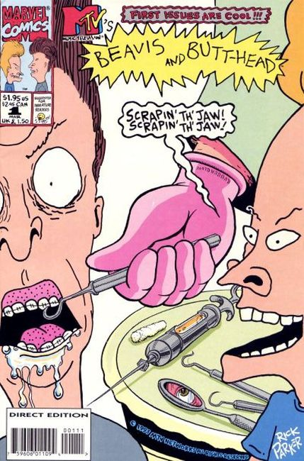

Beavis and Butt-Head is an American adult animated sitcom created and designed by Mike Judge. The series originated from Frog Baseball, a 1992 short film by Judge originally aired on Liquid Television. After seeing the short, MTV signed Judge to develop the concept. The series first ran for seven seasons from March 8, 1993 to November 28, 1997. The series was later renewed for an eighth season, which aired from October 27 to December 29, 2011. In 1996, the series was adapted into the animated feature film Beavis and Butt-Head Do America.
Comic Issue #1:

Dental Hygiene Dilemma: Beavis and Butt-Head visit a yam-stuffed Maxi-Mart where they have an altercation with the clerk. The Punisher Parody one-pager. An advertisement for the Swedish band "Entombed" and the new limited-edition version of their "Wolverine Blues" CD. Devil Dinosaur parody.